Projects
Building NVIDIA Autonomous Vehicle Technology (2018 - present)
Omnidirectional Vision for Assistive Localization (2012 - 2017)
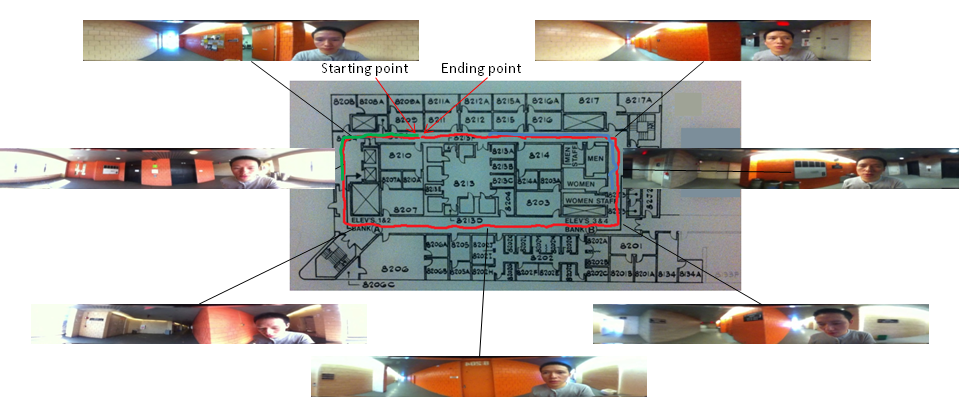
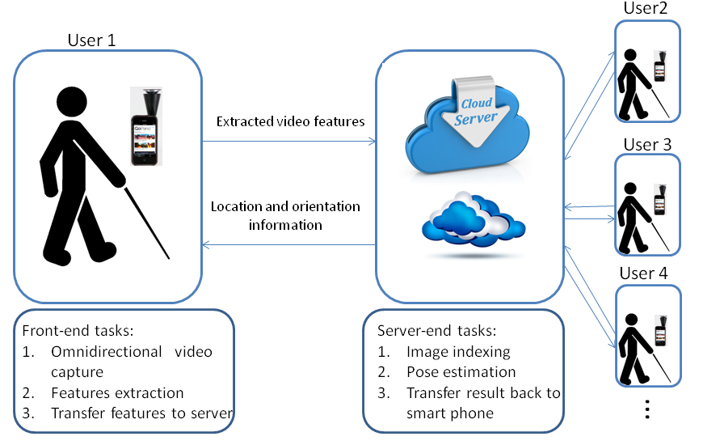
Goal:
To provide an real-time assistive localization approach to help blind and visually impaired people in navigating an indoor environment
System components:
Front end(iPhone + GoPano omnidirectional lens) and Server end (GPU-enabled Server)
Major features:
1. A novel combination of smartphone and portable lens for assistive indoor localization
2. New omni-features to represent environment and as online query keys for localization
3. Scalable and lightweight computation and storage solution with cloud computing
4. Real-time performance by utilizing data and task parallelism with many-core GPUs
Collaborators:
Prof. Zhigang Zhu, Jeury Mejia, Prof. Hao Tang, Prof. Jianting Zhang
Assistive 3D Localization with a Wearable Glass (2014 - 2017)
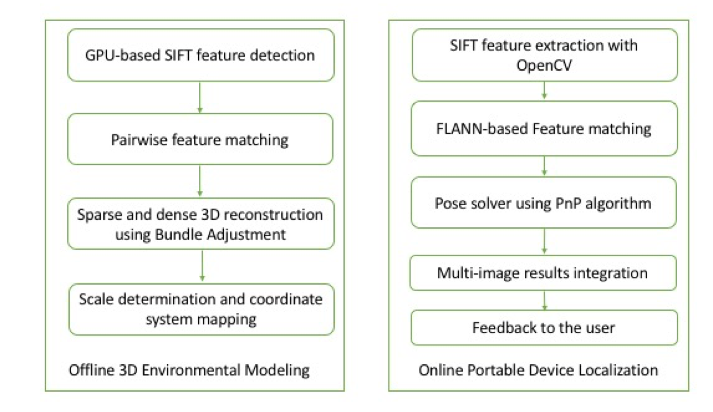
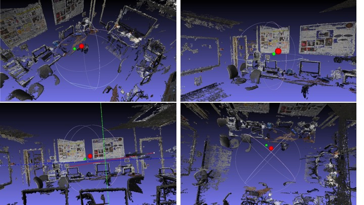
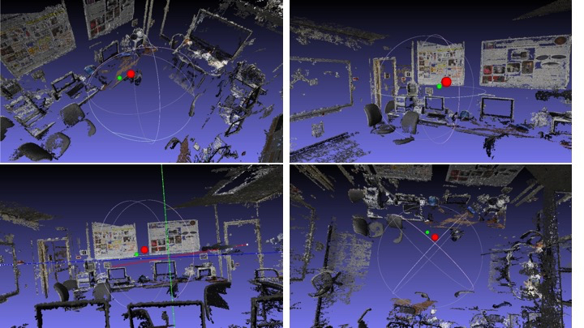
Goal:
Online assistive localization using pre-built 3D SfM model and a wearable glass via feature matching and geometric computing
System components:
A wearable glass (Google Glass) and a server for reconstructing 3D model
{kind=link}
Major features:
1. Accurate, real-time, and robust indoor localization system
2. Natural HCI, hands-free wearable device for visually impaired people
3. Determine the user's position and orientation, within indoor/outdoor environments, such as campus buildings
Collaborators:
Prof. Zhigang Zhu, Kenichi Yamamoto
Indoor Localization via 3D Dense Reconstruction and Model Matching (2014 - 2017)
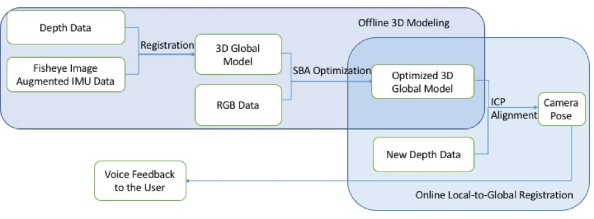
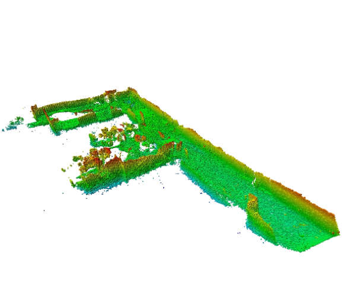
Goal:
Use pre-built dense 3D indoor environment model, and the new captured RGB-D local model to calculate a visually impaired person's location
System components:
Google Project Tango tablet and a server for 3D reconstructing
Major features:
1. Fast offline dense 3D reconstruction with Project Tango device
2. Bundle adjustment based 3D model optimization via SBA
3. Pose estimation and user interface for visually impaired people
{kind=link}
Collaborators:
Prof. Zhigang Zhu, Norbu Tsering, Prof. Hao Tang
Intelligent Panoramic Video Surveillance System (2009 - 2012)
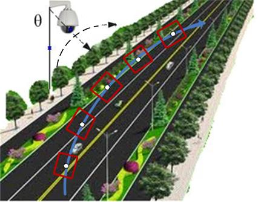
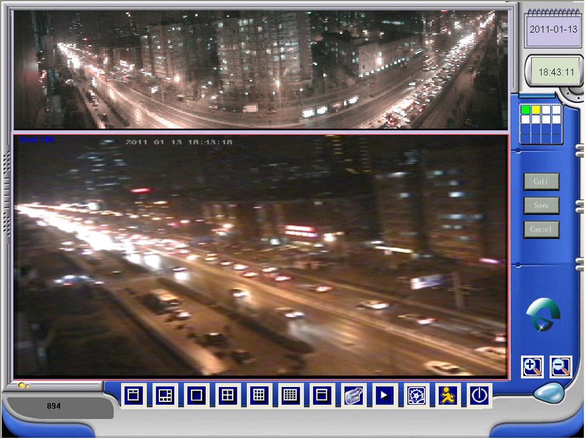
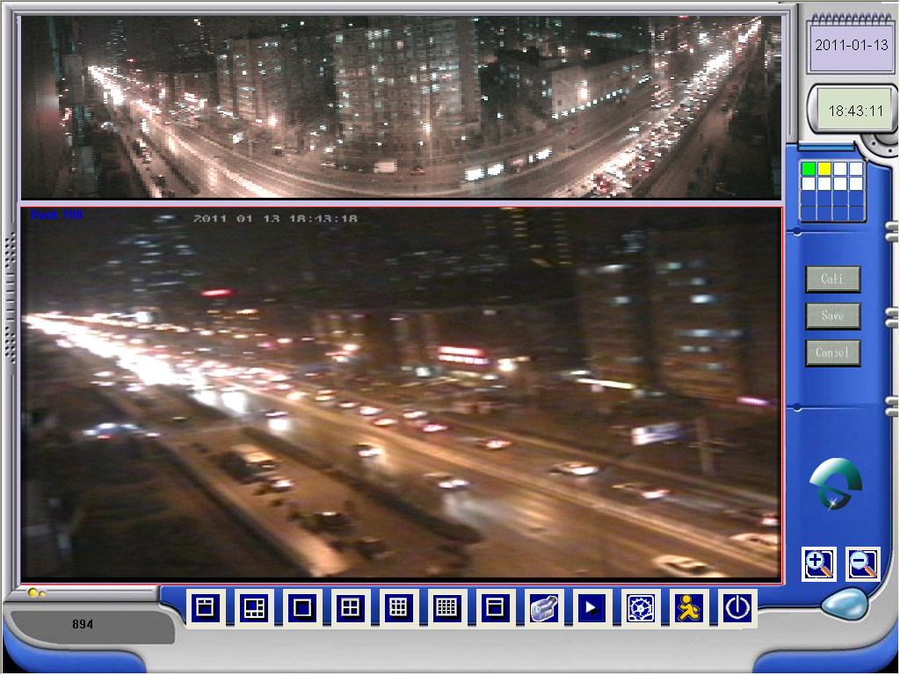
Goal:
Generating and updating panoramas for wide Field of View surveillance scene, and utilizing high-resolution Pan-Tilt-Zoom (PTZ) camera for monitoring a specific location (System diagram)
{kind=link}
System components:
PTZ camera, data acquisition card, and surveillance software
Major features:
1. Full stack surveillance system development (PTZ camera installation/repair, data acquisition card SDK, surveillance software, algorithm design and implementation)
2. Real-time panorama image generation and updating
3. PTZ camera calibration and automatic control
4. Fisheye image/oval fishieye image rectification (Tool GUI, Sample oval image, Sample rectified result)
{kind=link}
{kind=link}
{kind=link}
Collaborators:
Prof. Zheng Geng, Tuotuo Li
Pedestrian Detection in Image and Video with HOG and SVM (03/2009 - 06/2009)
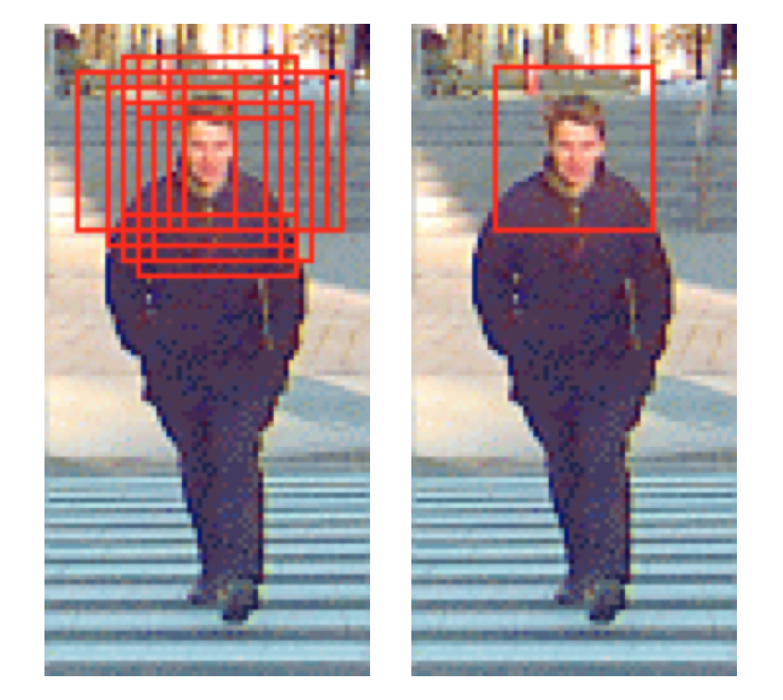
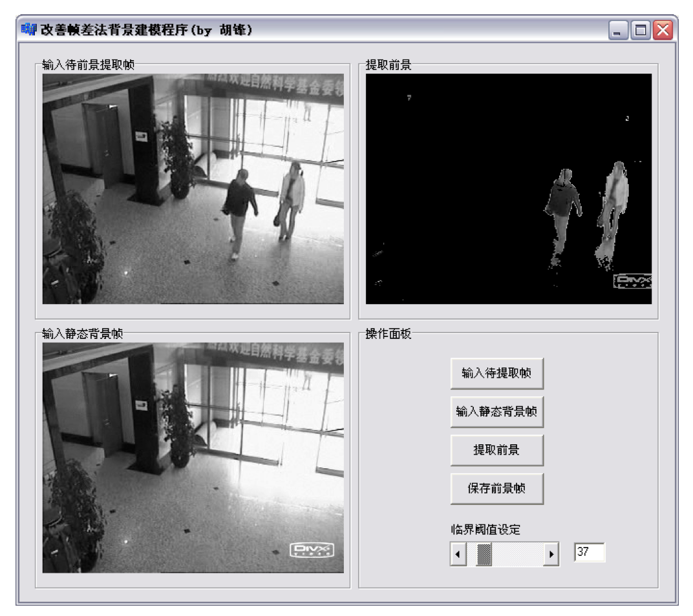
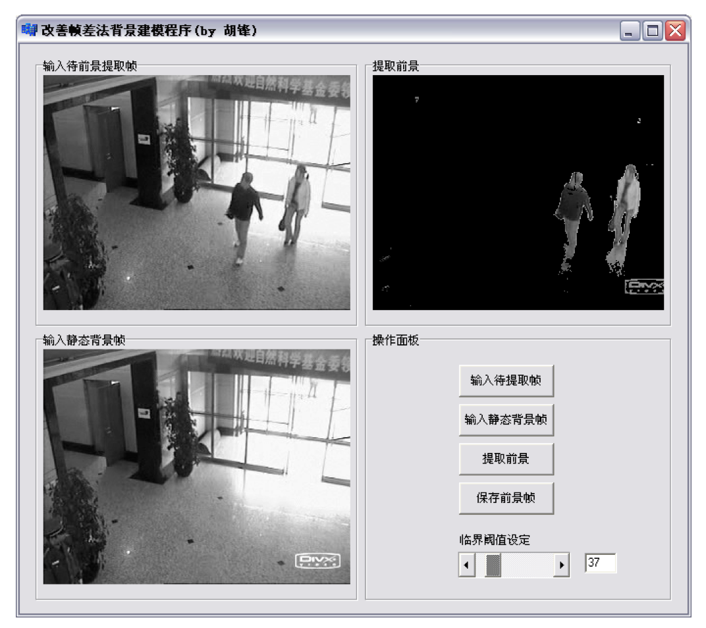
Goal:
Pedestrian detection and localization within image and video
Major features:
1. Design and implement head-shoulder based HOG feature for occluded scenes pedestrian detection using C++ Builder
2. Train SVM model and achieve 88.3% accuracy on MIT Pedestrian database
3. Detect pedestrians within images using sliding window and within surveillance videos using frame difference
{kind=link}
Collaborators:
IEEE Fellow, Prof. Stan. Z. Li, Prof.Jitao Sang